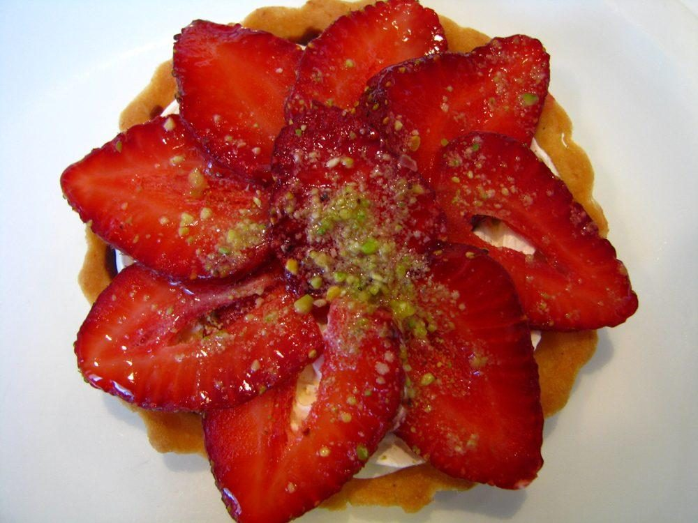
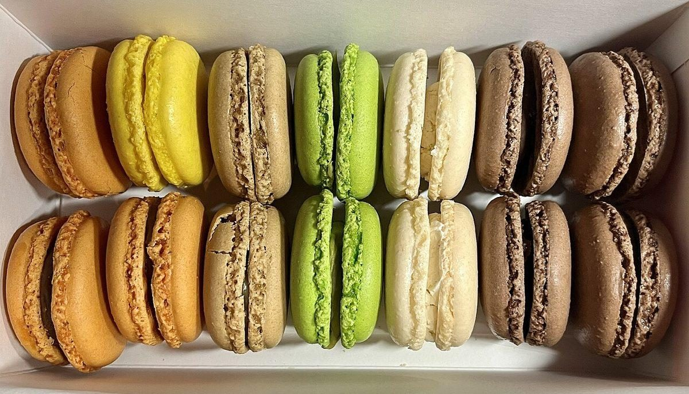
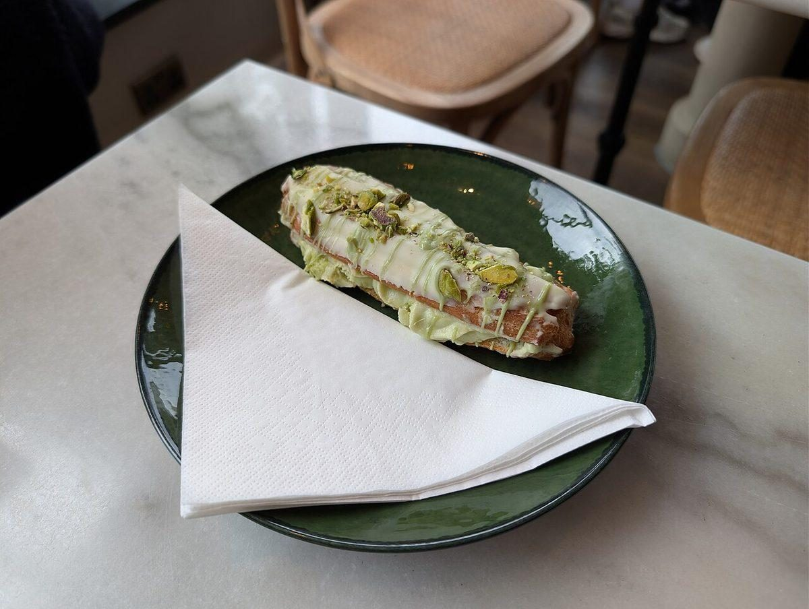
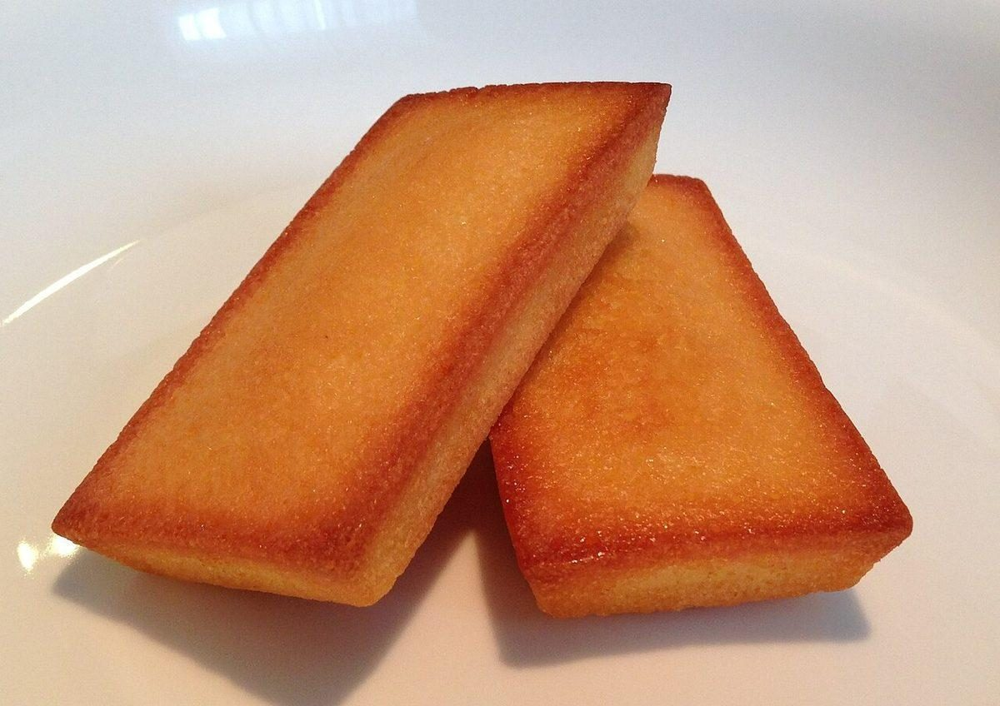

パティスリー(洋菓子) / 北海道伊達市
パティスリー
ビジュー
Pâtisserie Bijoux
北海道伊達市にある洋菓子店「パティスリービジュー」のご案内ページです。営業時間やメニューなど、詳しいことは準備中。まずはInstagramをのぞいてみてください。

制作側の連想(お店の理念・由来とは無関係)
「ビジュー」からジュエリートレイへ
店名の由来は分かりません。制作側は「ビジュー」という響きから宝石やアクセサリーを連想し、ベルベットを敷いたジュエリートレイに石を並べるように、このサイトを「五つのカット(宝石の切り方)」で組み立てました。ラウンド、エメラルド、マーキス、ペアシェイプ、プリンセス。各ページの写真は、そのカットの形に切り抜いています。お店の理念や由来とは関係のない、制作側の連想です。
洋菓子のイメージ
石のかわりに、写真をひとつずつ
写真は国外・撮影地不明のフリー素材で、お店の商品ではありません。提供内容を示すものでもありません。



ご案内
お店のこと(確認できたものだけ)
| 所在地 | 〒052-0021 北海道伊達市末永町６１−１ |
|---|---|
| 電話 | 0142-82-8191 |
| 営業時間 | 準備中 |
| 定休日 | 準備中 |
| ご予約 | 準備中 |
| 駐車場 | 準備中 |
| SNS | Instagram @patisserie_bijoux_ |